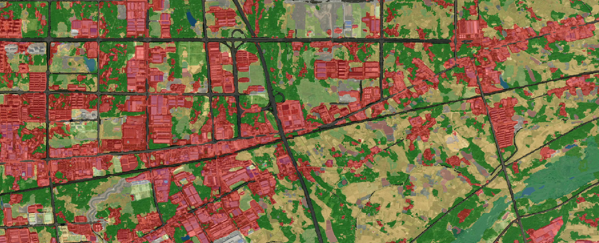

Detailed 2-Meter Resolution Land Cover Map of Hubei Province
Yinhe Liu, Xian Xu, Yingxin Wu, Sunan Shi, Yanfei Zhong*, Liangpei ZhangThe 2-meter resolution land cover classification map generated by the LabelAgent framework covers the entirety of Hubei Province. This high-resolution map provides detailed representations of land cover distributions and achieves an overall accuracy of approximately 80.76%.
The dataset used for this study, including the final land cover map, is available for download via the following links:
| Class | Color |
|---|---|
| Cropland | #f4e87a |
| Forestland | #228b22 |
| Grass/Shrub | #8cce64 |
| Roads | #000000 |
| Built-up Areas | #e31a1c |
| Bare Land | #a0a0a0 |
| Swamp | #c47b21 |
| Marsh | #87cefa |
| Flooded Land | #ffc0cb |
| Water Bodies | #4169e1 |
@article{Liu2024LabelAgent,
title={LabelAgent: Imbalance and Noisy Label Driven Remote Sensing Image Classification based on Deep Reinforcement Learning},
author={Yinhe Liu and Xian Xu and Yingxin Wu and Sunan Shi and Yanfei Zhong and Liangpei Zhang},
journal={ISPRS Journal of Photogrammetry and Remote Sensing},
status={Submitted},
year={2024}
}
The dataset and the land cover classification map provided by the LabelAgent framework are intended solely for academic, research, and non-commercial purposes. The use of these materials for any form of commercial activity, including but not limited to resale, redistribution for profit, or integration into commercial products, is strictly prohibited.
By using this dataset and map, users agree to adhere to these restrictions and understand that any violation of these terms may result in legal consequences.